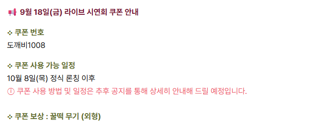

도깨비의세계 쿠폰 도깨비1008, 꿀떡 무기는 언제부터 쓸 수 있나
정식 오픈이 이틀 앞으로 다가왔네요. 이맘때는 공식 포럼 공지를 틈날 때마다 열어 보게 되잖아요. 저도 그러다 9월 18일 라이브 시연회 때 나왔던 감사 쿠폰 공지를 다시 읽었는데, 번호는 한 줄로 끝나도 언제부터 쓰는지, 다른 쿠폰이랑 뭐가 다른지는 은근히 헷갈리거든요. 그래서 10월 6일 기준으로 공식 공지를 확인해서 쿠폰 번호와 사용 시점, 받을 수 있는 보상을 한 번에 모아 봤어요.
먼저 알아 둘 점은 이 글의 쿠폰이 시연회 감사 쿠폰 하나라는 거예요. 룰렛 이벤트나 구독 이벤트에서 받는 상자와는 받는 경로가 달라서, 아래에서 따로 갈라 드릴게요.
도깨비의세계 쿠폰 번호는 뭔가요?
도깨비의세계 시연회 감사 쿠폰 번호는 도깨비1008이고, 한글 '도깨비' 뒤에 숫자 1008을 붙여 쓰는 번호예요.
공식 포럼에 올라온 감사 공지는 9월 18일 금요일 18시 30분에 진행된 라이브 시연회에 참여한 도사님들께 드리는 선물이에요. 쿠폰은 10월 8일 목요일 11시 정식 오픈 이후에 쓸 수 있다고 적혀 있어서, 지금 바로 넣어 볼 수는 없어요.

공지 캡처에서 볼 수 있듯 쿠폰 번호, 사용 가능한 시점, 보상이 세 줄로 정리돼 있어요. 번호를 미리 메모해 두면 오픈하는 날 찾아 헤맬 일은 없겠네요.
쿠폰은 언제부터 쓸 수 있나요?
쿠폰은 10월 8일 목요일 11시 정식 오픈 이후부터 사용할 수 있어요.
| 날짜 | 일정 | 쿠폰 관련 |
|---|---|---|
| 9월 18일(금) 18:30 | 라이브 시연회 | 참여자 감사 쿠폰 공지(같은 날 올라온 안내) |
| 10월 8일(목) 11:00 | 정식 오픈 | 도깨비1008 사용 가능 시점 |
여기서 제일 중요한 건 사용 시점이 정식 론칭 이후라는 거예요. 오픈 전에는 쓸 수 없으니 이번 주 목요일 오전 11시가 기준이고, 정식 오픈 시각은 10월 6일에 올라온 공식 안내에도 같은 날짜와 시각으로 적혀 있어요. 저는 그날 접속하면 캐릭터 만들기보다 포럼 공지부터 열어 볼 생각이에요.
쿠폰을 쓰면 뭘 받나요?
도깨비1008 쿠폰의 보상은 꿀떡 무기(외형)예요.
공지에 붙은 일러스트를 보면 남녀 캐릭터가 꿀떡 모양의 무기를 들고 있는 도트 그림이 실려 있어요. 보상 이름 옆에 '외형'이라고 적혀 있다는 점이 포인트인데요, 외형이라는 표현으로 미루어 겉모습을 꾸미는 쪽에 가까워 보여요.

떡 모양 무기라는 게 도깨비 세계관이랑 은근히 잘 어울려서, 저는 이 일러스트만 봐도 웃음이 나네요 ㅎㅎ 다만 무기가 실제로 어떤 능력을 갖는지는 공지에 언급이 없어서 단정하기가 어려워요.
아직 공개되지 않은 부분은 뭐가 있나요?
공식 공지는 쿠폰 사용 방법과 일정을 추후 공지로 상세히 안내하겠다고 밝혔어요. 지금 공지로는 확인되지 않는 항목은 이렇게 다섯 가지예요.
- 쿠폰을 넣는 위치(입력 경로)와 사용 방법
- 사용 종료일
- 계정당 사용 횟수
- 시연회에 참여하지 않은 계정도 쓸 수 있는지
- 꿀떡 무기의 인게임 능력치
룰렛 상자나 구독 상자랑은 뭐가 다른가요?
도깨비1008은 공지에 적힌 쿠폰 번호이고, 탈것 선택 상자와 채널 구독 보상 상자는 카카오톡 채널 메시지로 쿠폰 코드가 발송되는 보상이라 받는 경로와 보상이 서로 달라요.
| 구분 | 도깨비1008 | 탈것 선택 상자 | 채널 구독 보상 상자 |
|---|---|---|---|
| 받는 길 | 시연회 참여 감사 | 룰렛 이벤트 당첨 | 카카오톡 채널·유튜브 구독 |
| 코드 | 공지에 적힌 쿠폰 번호 | 카카오톡 채널 메시지로 코드 발송 | 카카오톡 채널 메시지로 코드 발송 |
| 시점 | 10월 8일 11:00 정식 오픈 후 | 정식 오픈 후 메시지 도착 | 정식 오픈 후 메시지 도착 |
룰렛과 구독 쪽 내용은 공식 이벤트 공지에서 이렇게 확인돼요.
- 룰렛 이벤트 기간: 8월 20일(목) 사전예약 오픈 이후부터 10월 5일(월) 23시 59분까지라서 이미 끝났어요
- 당첨된 분께만 정식 오픈 후 카카오톡 채널 메시지로 쿠폰 코드가 발송돼요
- 사용 흐름: 쿠폰 사용 → 우편함으로 탈것 선택 상자 지급 → 상자를 사용하면 탈것 6종 중 1개 선택
- 탈것 선택 상자 쿠폰은 계정당 6회까지 쓸 수 있어요(도깨비1008의 횟수와는 별개예요)
- 채널 구독 보상 상자: 카카오톡 채널과 유튜브를 구독하면 지급되고, 코드는 정식 오픈 후 채널 메시지로 와요
정리하면 도깨비1008은 시연회에 참여해서 받는 감사 쿠폰이고, 나머지 둘은 이벤트 보상이에요. 받은 이유부터 다르다고 보면 헷갈릴 일이 없어요.
오픈 날에는 어떤 순서로 챙기면 되나요?
오픈 날은 번호 메모, 공지 확인, 메시지함 확인 순서로 움직이면 편해요.
- 10월 8일 11시 전: 쿠폰 번호 도깨비1008을 메모해 둡니다
- 11시 정식 오픈: 공식 포럼에 쿠폰 사용 방법 공지가 올라왔는지 확인합니다
- 사용 방법이 공개되면: 공지에 적힌 방법대로 쿠폰 번호를 써서 꿀떡 무기를 받아요
- 따로: 룰렛 당첨이나 구독 보상이 있다면 카카오톡 채널 메시지함에서 코드를 확인합니다
3번은 사용 방법 공지가 나와야 할 수 있는 단계라서, 공지 확인이 앞에 오는 거예요.
시연회에 참여하지 못했는데 쓸 수 있을까요?
공식 공지는 '9월 18일(금) 18:30에 진행된 라이브 시연회에 참여해 주신 모든 도사님'께 드리는 감사 쿠폰이라고 소개하고 있어요. 공지 안에 참여 여부를 확인하는 방식이나 별도 조건은 적혀 있지 않으니, 미참여 계정의 사용 여부는 사용 방법 공지가 나와야 알 수 있어요.
사전예약 보상도 이 쿠폰과는 별개예요. 카카오게임즈 사전예약 페이지(https://game.kakao.com/ar/YaMnV9)가 따로 있고, 공식 포럼 사전예약 안내 공지를 보면 카카오 사전예약 완료 보상은 인게임 의복 갓(투구) 선택 상자이고, 마켓 사전예약은 스티커 세트 1종이에요. 보상 지급 일정은 별도 공지 예정이라고 해요.
도깨비의세계 쿠폰 도깨비1008 한 번에 보면
도깨비의세계 쿠폰 번호는 도깨비1008이고, 보상은 꿀떡 무기(외형)이며, 10월 8일 목요일 11시 정식 오픈 이후부터 쓸 수 있어요. 룰렛의 탈것 선택 상자와 구독의 채널 구독 보상 상자는 카카오톡 채널 메시지로 코드가 발송되는 보상이라 별개고요. 입력 위치와 종료일은 공식 추후 공지를 기다려야 해요. 꿀떡 무기 들고 다 같이 오픈 첫날 즐겜하세요!
✔ 도깨비의세계 같이 보기 좋은 내용
· 도깨비의세계 사전 다운로드 10월 6일 11시, PC 모바일 최소 권장 사양 한눈에
· 도깨비의세계 출시에 없는 콘텐츠 정리, 낚시 채집 결혼은 언제 오나
· 도깨비의세계 PvP 콘텐츠 4종 총정리, 낙화의 전장 차원점령전 차이부터 미혹의 정원 신기쟁탈전까지
참고한 곳
· 도깨비의세계 공식 포럼 공지(시연회 감사쿠폰 안내)
· 도깨비의세계 공식 포럼 이벤트(룰렛 이벤트 안내)
· 도깨비의세계 공식 포럼 공지(사전예약 안내)